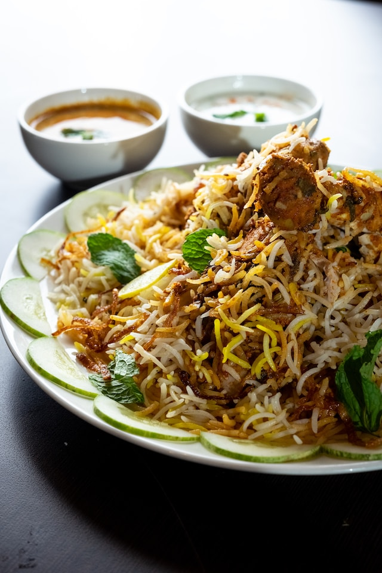

Kacchi khabi?

Description
Kacchi, also known as Kacchi Biryani, is a renowned South Asian dish originating in the Indian subcontinent, particularly in Hyderabad, India. This flavorful dish features marinated meat, traditionally mutton or chicken, layered with partially cooked basmati rice and slow-cooked in a sealed pot or handi. The name "Kacchi" translates to "raw" in Urdu, highlighting the unique cooking technique where raw marinated meat is layered with parboiled rice. The slow cooking process allows the meat to tenderize and absorb the aromatic spices, resulting in a fragrant, mouthwatering biryani dish enjoyed by food enthusiasts worldwide.
History
Over the years, Kacchi Biryani has become an integral part of festive occasions, family gatherings, and celebrations, captivating taste buds with its rich history and exquisite flavors. This dish has transcended regional boundaries, becoming popular not only in India but also in various parts of the world, where food lovers savor its delightful taste and appreciate the cultural heritage it represents.
Ingredients
- Marinated Meat
- Basmati Rice
- Aromatic Spices
- Herbs
- Ghee/Oil
Instruction
- Layering Marinated Meat: Place the marinated meat at the bottom of a heavy-bottomed pot or handi, creating an even layer. Ensure the meat is spread out evenly for uniform cooking.
- Adding Parboiled Rice: Spread the partially cooked basmati rice evenly over the marinated meat layer. Gently press down the rice to create a compact layer..
- Layering Aromatic Spices and Herbs: Sprinkle a handful of chopped fresh cilantro and mint leaves over the rice. Insert whole spices such as cardamom, cloves, cinnamon, and bay leaves into the rice for added flavor.
- Drizzling Ghee and Sealing the Pot: Drizzle ghee or oil over the layered ingredients, ensuring the biryani is moist and flavorful. Seal the pot tightly with a lid or dough to trap the steam, allowing the biryani to cook in its juices.
- Dum Cooking:Cook the biryani on low heat (dum) for 30-40 minutes. This slow-cooking method allows the flavors to meld, the meat to tenderize, and the rice to absorb the aromas. Avoid opening the lid frequently to retain the steam. Once done, gently fluff the biryani with a fork before serving.
Return to top
Main menu